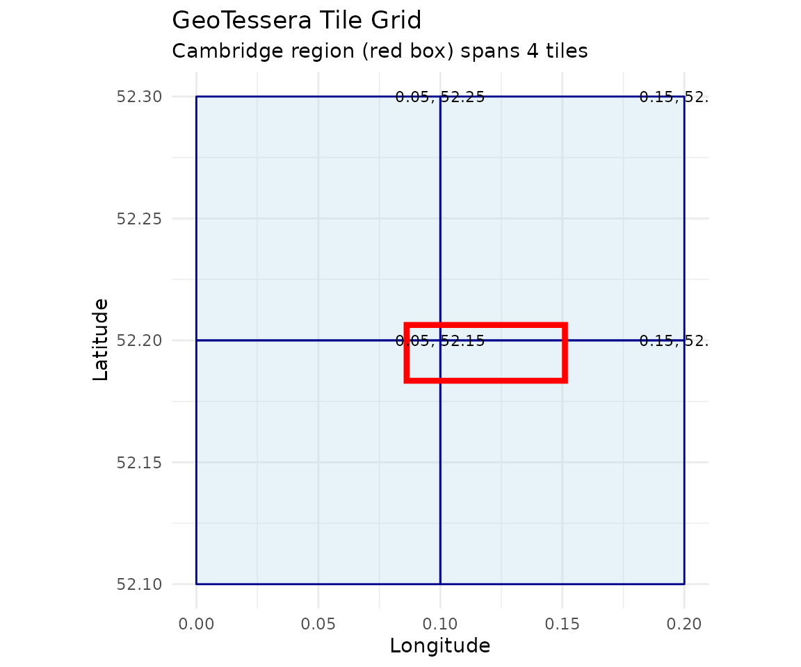
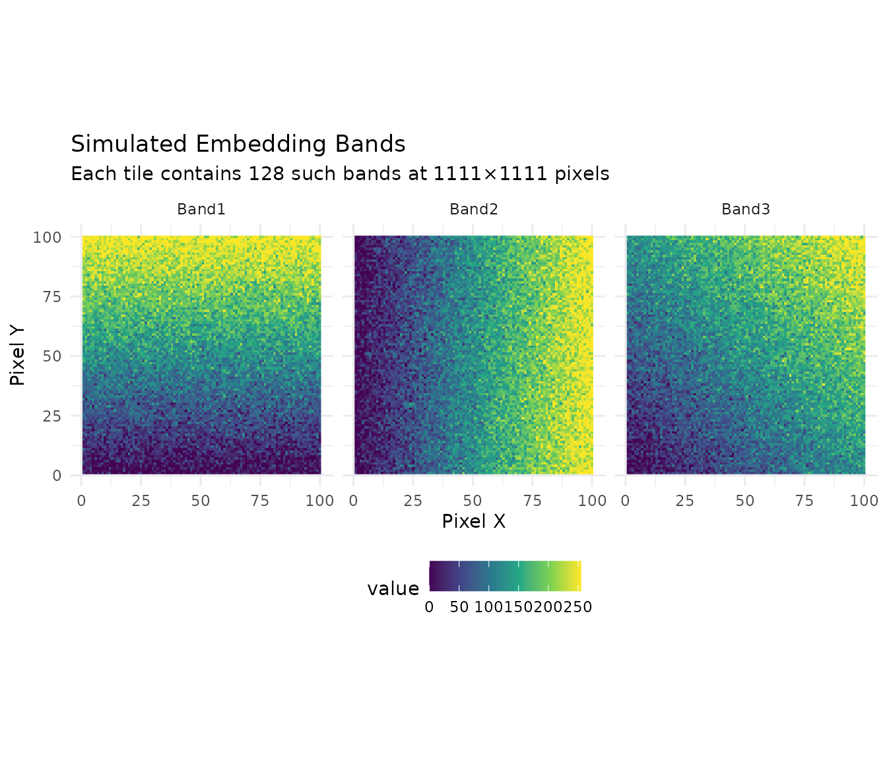
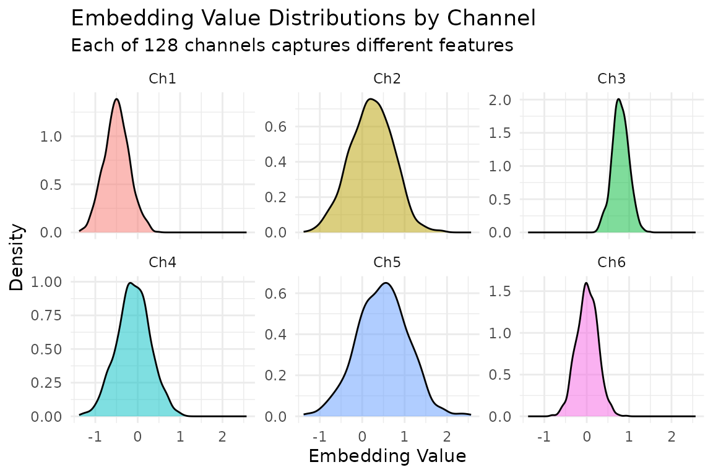

Introduction
The GeoTessera package provides an R interface to Tessera geofoundation model embeddings. Tessera is a foundation model that processes Sentinel-1 and Sentinel-2 satellite imagery to generate 128-channel dense representation maps at 10m resolution.
These embeddings capture rich semantic information about land cover, land use, and environmental conditions, making them useful for:
- Land cover classification
- Change detection
- Environmental monitoring
- Agricultural applications
- Urban analysis
Installation
# Install from GitHub
remotes::install_github("lassa_sentinel/GeoTessera")
# Or install from local source
install.packages("path/to/GeoTessera", repos = NULL, type = "source")Coordinate System Demonstration
Before diving into downloads, let’s demonstrate how GeoTessera’s coordinate system works. These examples run without network access.
Tile Coordinate Conversion
GeoTessera tiles are 0.1° × 0.1° cells aligned to a global grid:
# Convert a world coordinate to its containing tile
tile_coords <- tile_from_world(lon = 0.17, lat = 52.23)
print(tile_coords)
#> $tile_lon
#> [1] 0.15
#>
#> $tile_lat
#> [1] 52.25
# This point falls within tile (0.15, 52.25)
# Get the bounds of that tile
bounds <- tile_to_bounds(tile_coords$tile_lon, tile_coords$tile_lat)
print(bounds)
#> $xmin
#> [1] 0.1
#>
#> $ymin
#> [1] 52.2
#>
#> $xmax
#> [1] 0.2
#>
#> $ymax
#> [1] 52.3
# The tile covers lon: [0.15, 0.25), lat: [52.2, 52.3)Visualizing the Tile Grid
library(ggplot2)
# Cambridge region bounding box
cambridge <- data.frame(
xmin = 0.086174, ymin = 52.183432,
xmax = 0.151062, ymax = 52.206318
)
# Calculate which tiles cover this region
tiles <- expand.grid(
tile_lon = seq(0.05, 0.15, by = 0.1),
tile_lat = seq(52.15, 52.25, by = 0.1)
)
# Create tile polygons
tile_polys <- do.call(rbind, lapply(1:nrow(tiles), function(i) {
bounds <- tile_to_bounds(tiles$tile_lon[i], tiles$tile_lat[i])
data.frame(
tile = paste0("grid_", tiles$tile_lon[i], "_", tiles$tile_lat[i]),
x = c(bounds$xmin, bounds$xmax, bounds$xmax, bounds$xmin, bounds$xmin),
y = c(bounds$ymin, bounds$ymin, bounds$ymax, bounds$ymax, bounds$ymin)
)
}))
# Plot the tile grid with Cambridge bbox
ggplot() +
geom_polygon(data = tile_polys, aes(x = x, y = y, group = tile),
fill = "lightblue", color = "darkblue", alpha = 0.3) +
geom_rect(data = cambridge,
aes(xmin = xmin, xmax = xmax, ymin = ymin, ymax = ymax),
fill = NA, color = "red", linewidth = 1.5) +
geom_text(data = tiles, aes(x = tile_lon + 0.05, y = tile_lat + 0.05,
label = paste0(tile_lon, ", ", tile_lat)),
size = 3) +
coord_fixed() +
labs(title = "GeoTessera Tile Grid",
subtitle = "Cambridge region (red box) spans 4 tiles",
x = "Longitude", y = "Latitude") +
theme_minimal()
Simulated Embedding Visualization
Here’s what a single tile’s embeddings look like when visualized:
# Create simulated embedding data (128 channels, 100x100 pixels for speed)
set.seed(42)
n_pixels <- 100
n_channels <- 128
# Simulate smooth spatial patterns using simple gradients + noise
x_grid <- matrix(rep(1:n_pixels, n_pixels), nrow = n_pixels, byrow = TRUE)
y_grid <- matrix(rep(1:n_pixels, n_pixels), nrow = n_pixels, byrow = FALSE)
# Create a 3-channel visualization (simulating first 3 embedding bands)
band1 <- (x_grid / n_pixels + rnorm(n_pixels^2, 0, 0.1)) * 255
band2 <- (y_grid / n_pixels + rnorm(n_pixels^2, 0, 0.1)) * 255
band3 <- ((x_grid + y_grid) / (2 * n_pixels) + rnorm(n_pixels^2, 0, 0.1)) * 255
# Clamp values
band1 <- pmax(0, pmin(255, band1))
band2 <- pmax(0, pmin(255, band2))
band3 <- pmax(0, pmin(255, band3))
# Create data frame for plotting
sim_data <- data.frame(
x = rep(1:n_pixels, n_pixels),
y = rep(1:n_pixels, each = n_pixels),
Band1 = as.vector(band1),
Band2 = as.vector(band2),
Band3 = as.vector(band3)
)
# Reshape for faceted plot
library(tidyr)
sim_long <- pivot_longer(sim_data, cols = c(Band1, Band2, Band3),
names_to = "band", values_to = "value")
ggplot(sim_long, aes(x = x, y = y, fill = value)) +
geom_raster() +
facet_wrap(~band, ncol = 3) +
scale_fill_viridis_c() +
coord_fixed() +
labs(title = "Simulated Embedding Bands",
subtitle = "Each tile contains 128 such bands at 1111×1111 pixels",
x = "Pixel X", y = "Pixel Y") +
theme_minimal() +
theme(legend.position = "bottom")
Embedding Value Distribution
# Simulate what real embedding distributions look like
set.seed(123)
n_samples <- 1000
# Embeddings typically have structured distributions per channel
embedding_samples <- data.frame(
Channel = rep(paste0("Ch", 1:6), each = n_samples),
Value = c(
rnorm(n_samples, mean = -0.5, sd = 0.3),
rnorm(n_samples, mean = 0.2, sd = 0.5),
rnorm(n_samples, mean = 0.8, sd = 0.2),
rnorm(n_samples, mean = -0.1, sd = 0.4),
rnorm(n_samples, mean = 0.5, sd = 0.6),
rnorm(n_samples, mean = 0.0, sd = 0.25)
)
)
ggplot(embedding_samples, aes(x = Value, fill = Channel)) +
geom_density(alpha = 0.5) +
facet_wrap(~Channel, scales = "free_y") +
labs(title = "Embedding Value Distributions by Channel",
subtitle = "Each of 128 channels captures different features",
x = "Embedding Value", y = "Density") +
theme_minimal() +
theme(legend.position = "none")
Understanding the Data Structure
Tessera data is organized hierarchically:
World Coordinates (any lon/lat)
|
Blocks (5 x 5 degree regions) - for registry organization
|
Tiles (0.1 x 0.1 degree regions) - individual data files
|
Pixels (10m resolution) - 1111 x 1111 per tile
|
Embeddings (128 channels per pixel)Each tile covers approximately 11 km x 11 km and contains about 1.2 million pixels, each with 128 embedding values.
Creating a GeoTessera Client
The main entry point is the geotessera() function:
# Create a client with default settings
gt <- geotessera()
# Print information about the client
print(gt)You can customize the client with various options:
gt <- geotessera(
dataset_version = "v1", # Dataset version
cache_dir = "~/.cache/geotessera", # Where to cache registry files
embeddings_dir = "./data", # Where to store downloaded embeddings
verify_hashes = TRUE # Verify SHA256 hashes on downloads
)Quick Start: Cambridge Region Example
This section uses the Cambridge, UK region as a practical example. This area contains 4 tiles (approximately 400 MB total) and is a good size for getting started.
Step 1: Initialize and Query
# Create client
gt <- geotessera()
# Cambridge region bounding box (covers 4 tiles)
cambridge_bbox <- c(0.086174, 52.183432, 0.151062, 52.206318)
# Check how many tiles are available
n_tiles <- gt$embeddings_count(
bbox = list(
xmin = cambridge_bbox[1],
ymin = cambridge_bbox[2],
xmax = cambridge_bbox[3],
ymax = cambridge_bbox[4]
),
year = 2024
)
print(paste("Tiles available:", n_tiles))
# Expected: 4 tilesStep 2: Get Tile Metadata
# Get tile metadata (doesn't download data yet)
tiles <- gt$get_tiles(
bbox = list(
xmin = cambridge_bbox[1],
ymin = cambridge_bbox[2],
xmax = cambridge_bbox[3],
ymax = cambridge_bbox[4]
),
year = 2024
)
# View tile information
print(tiles)
# Columns: lon, lat, year, embedding_hash, scales_hash, embedding_size, scales_size
# The 4 tiles should be:
# grid_0.05_52.15, grid_0.05_52.25, grid_0.15_52.15, grid_0.15_52.25Step 3: Download and Export as GeoTIFFs
# Export tiles as GeoTIFFs (downloads data and converts)
output_dir <- "cambridge_embeddings"
paths <- gt$export_embedding_geotiffs(
tiles = tiles,
output_dir = output_dir,
compress = "lzw",
progress = TRUE
)
# List exported files
print(paths)Step 4: Load and Inspect a Tile
# Download a single tile containing a specific point
tile <- gt$download_tile(
lon = 0.1, # A point within Cambridge
lat = 52.2,
year = 2024
)
# View tile information
print(tile)
print(tile$get_grid_name()) # "grid_0.05_52.15"
print(tile$get_bounds()) # xmin=0.0, ymin=52.1, xmax=0.1, ymax=52.2
# Load the embedding array
embedding <- tile$load_embedding()
print(dim(embedding))
# [1] 1111 1111 128 (height, width, channels)
# Access a specific pixel's embedding (center of tile)
pixel_embedding <- embedding[556, 556, ]
print(length(pixel_embedding)) # 128 valuesStep 5: Sample at Specific Points
# Define sample points within Cambridge
sample_points <- data.frame(
lon = c(0.10, 0.12, 0.14),
lat = c(52.19, 52.20, 52.21),
site_name = c("West Cambridge", "Central", "East Cambridge")
)
# Sample embeddings at these points
samples <- gt$sample_embeddings_at_points(
points = sample_points,
year = 2024,
download = TRUE,
progress = TRUE
)
# View results
print(dim(samples))
# [1] 3 130 (3 points x (lon + lat + 128 embeddings))
print(names(samples)[1:10])
# "lon" "lat" "embedding_1" "embedding_2" ...Working with Different Regions
UK Region (16 tiles)
A larger example covering London:
# UK region around London (16 tiles)
uk_bbox <- list(xmin = -0.1, ymin = 51.3, xmax = 0.1, ymax = 51.5)
# Check tile count
n_tiles <- gt$embeddings_count(bbox = uk_bbox, year = 2024)
print(paste("UK region tiles:", n_tiles))
# Expected: 16 tiles
# Get tile metadata (dry run - no download)
uk_tiles <- gt$get_tiles(bbox = uk_bbox, year = 2024)
print(nrow(uk_tiles)) # 16Single Tile from a Point
# Any point resolves to a specific tile
# Point (0.17, 52.23) -> tile grid_0.15_52.25
tile_coords <- tile_from_world(0.17, 52.23)
print(paste("Tile:", tile_coords$tile_lon, tile_coords$tile_lat))
# "Tile: 0.15 52.25"
# Download just that tile
single_tile <- gt$download_tile(lon = 0.17, lat = 52.23, year = 2024)
print(single_tile$get_grid_name()) # "grid_0.15_52.25"Different Bounding Box Formats
# As a named vector
bbox <- c(xmin = 0.086174, ymin = 52.183432, xmax = 0.151062, ymax = 52.206318)
# As a list
bbox <- list(xmin = 0.086174, ymin = 52.183432, xmax = 0.151062, ymax = 52.206318)
# From an sf object
library(sf)
cambridge <- st_point(c(0.12, 52.2)) |>
st_sfc(crs = 4326) |>
st_buffer(0.05)
bbox <- st_bbox(cambridge)
# All formats work with get_tiles()
tiles <- gt$get_tiles(bbox = bbox, year = 2024)Exporting Specific Bands
# Export only first 3 bands (useful for RGB visualization)
paths <- gt$export_embedding_geotiffs(
tiles = tiles,
output_dir = "cambridge_3bands",
bands = 1:3,
compress = "lzw"
)Working with terra
The exported GeoTIFFs work seamlessly with the terra
package:
library(terra)
# Load an exported tile
r <- rast("cambridge_embeddings/grid_0.05_52.15.tif")
# Basic information
print(r)
print(nlyr(r)) # 128 layers
print(res(r)) # Resolution (in UTM meters)
print(ext(r)) # Extent (in UTM coordinates)
print(crs(r)) # CRS (UTM zone 31N for Cambridge)
# Extract specific bands
bands_subset <- r[[1:3]]
# Plot a single band
plot(r[[1]], main = "Band 1")
# Create RGB plot from bands 30, 60, 90
plotRGB(r[[c(30, 60, 90)]], stretch = "lin")
# Calculate statistics
global(r[[1]], fun = "mean", na.rm = TRUE)Applying PCA for Visualization
Reduce 128 bands to 3 principal components for visualization:
# Load embedding from a tile
tile <- gt$download_tile(lon = 0.1, lat = 52.2, year = 2024)
embedding <- tile$load_embedding()
# Apply PCA (128 -> 3 components)
pca_result <- gt$apply_pca_to_embeddings(
embeddings = embedding,
n_components = 3
)
print(dim(pca_result))
# [1] 1111 1111 3
# Export tiles with PCA applied
pca_paths <- gt$export_pca_geotiffs(
tiles = tiles,
output_dir = "cambridge_pca",
n_components = 3
)Merging Tiles into Mosaics
Combine multiple tiles into a single raster:
# Merge all GeoTIFFs in a directory
gt$merge_geotiffs_to_mosaic(
input_dir = "cambridge_embeddings",
output_path = "cambridge_mosaic.tif"
)
# Or use terra directly for more control
library(terra)
tiffs <- list.files("cambridge_embeddings", pattern = "\\.tif$", full.names = TRUE)
rasters <- lapply(tiffs, rast)
mosaic <- do.call(merge, rasters)
writeRaster(mosaic, "cambridge_mosaic_terra.tif")Discovering Local Tiles
If you have previously downloaded tiles, you can discover them:
# Auto-detect tile format and find all tiles
tiles <- discover_tiles("cambridge_embeddings")
print(length(tiles))
# Get tiles by format
formats <- discover_formats("./data")
print(names(formats)) # "npy", "geotiff", "zarr"
print(length(formats$geotiff))Configuration Options
Cache Directory
# Check default cache location
print(get_cache_dir())
# Set custom cache via environment variable
Sys.setenv(GEOTESSERA_CACHE_DIR = "/path/to/cache")
# Or pass directly to client
gt <- geotessera(cache_dir = "/custom/cache")Hash Verification
# Disable hash verification for faster downloads (not recommended for production)
gt <- geotessera(verify_hashes = FALSE)Best Practices
Start with Cambridge: Use the Cambridge region (4 tiles, ~400 MB) for testing.
Use compression: Always use
compress = "lzw"for GeoTIFF exports to save disk space (typically 50-70% reduction).Work regionally: Process data in chunks rather than loading entire countries at once.
Keep hash verification: Leave
verify_hashes = TRUEto ensure data integrity, especially for archival purposes.Use point sampling: For machine learning tasks, sample at points rather than downloading entire tiles when possible.
Monitor disk space: Each tile is approximately 100 MB for NPY format. The Cambridge region is ~400 MB; the UK London region (16 tiles) is ~1.6 GB.
Next Steps
- See
vignette("machine-learning", package = "GeoTessera")for ML workflows - Explore the Tessera documentation for more details
- Check the package reference:
help(package = "GeoTessera")